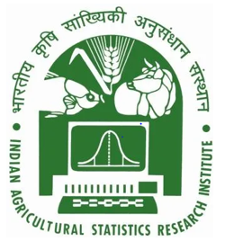
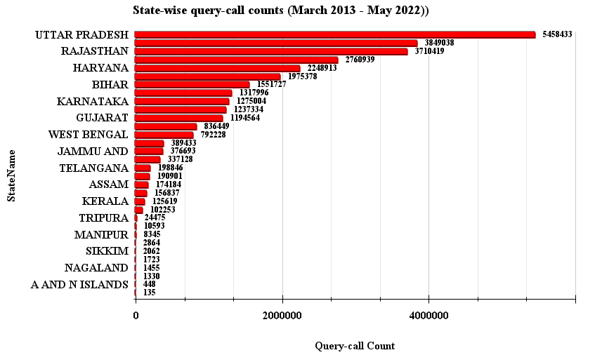
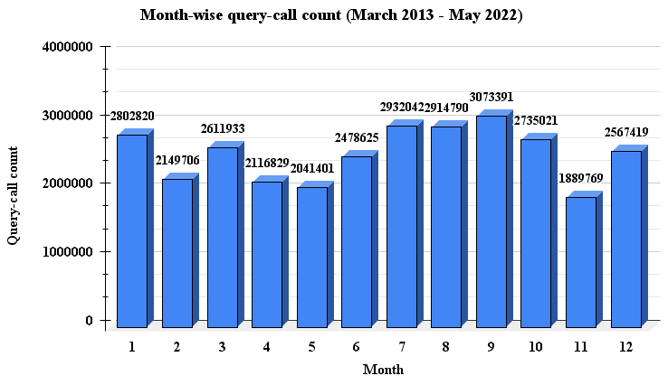
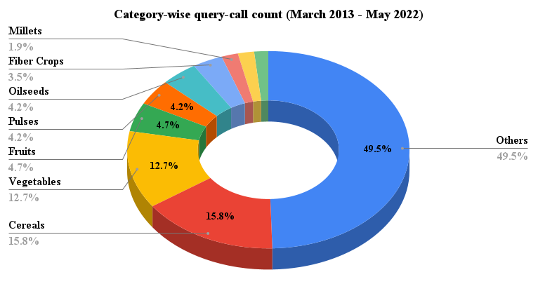
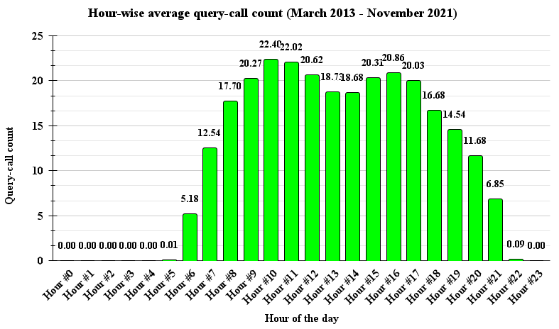
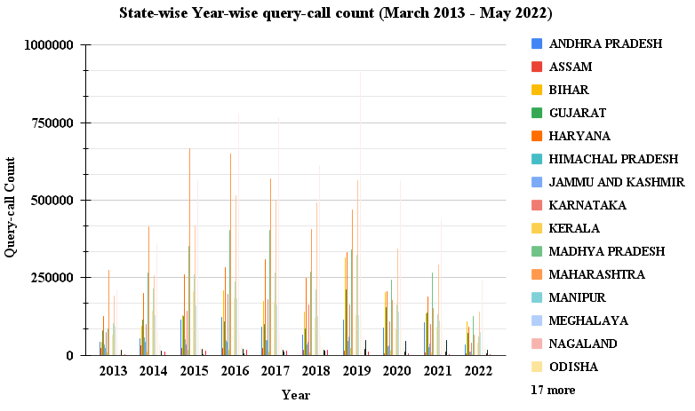

Kisan Call Center
Data insights
Data insights
ICAR-Indian Agricultural Statistics Research Institute, New Delhi, India
State-wise insights

From the dataset, it is noticed that the farmers from the states of Uttar Pradesh, Maharashtra,
and Rajasthan asked the most questions in the past few years. Whereas, farmers from Nagaland,
Arunachal Pradesh, and Mizoram have asked the minimum number of questions. The complete list of states along
with the number of questions asked corresponding to them in the period of March 2013 to May 2022
is available here.
View Table
View Table
Crop-wise insights

It is noted that farmers from all over India asked most questions regarding the crops of Paddy (Dhan), Wheat,
Cotton (Kapas), Chillies, Onion, Brinjal, Sugarcane (Noble Cane), Tomato, Bengal Gram (Gram/Chick Pea/Kabuli/Chana),
and Groundnut (pea nut/mung phalli). The complete list of crops along with the corresponding number of questions in the
past from March 2013 to May 2022 is given here.
View Table
View Table
Year-wise insights

From the dataset, it is observed that the order of years with the increasing number of queries can be given as 2022, 2013, 2021,
2014, 2020, 2018, 2015, 2017, 2016, and 2019. The complete list of years along with the number of queries corresponding to
them is given here (Study period: March 2013 to May 2022).
View Table
View Table
Month-wise insights

The order of months with the increasing number of query calls in the dataset is noted to be: May, February, November, April,
December, January, March, June, October, August, July, and September. Therefore, it is observed that the highest number of
query calls received is in the months of July, August, September, and October. The complete list of months along with the number
of queries corresponding to them is given here (Study period: March 2013 to May 2022).
View Table
View Table
Sector-wise insights

After separating the dataset based on the sectors, it is noted that the most queries are received from the agriculture sector,
whereas, Horticulture is in second place, followed by Animal Husbandry and Fisheries. The complete list of sectors along with
the number of queries corresponding to them is given here (Study period: March 2013 to May 2022).
View Table
View Table
Category-wise insights

The farmers from all over India are observed to have asked queries regarding the following the most: Cereals, Vegetables, Fruits,
Oilseeds, and Pulses. Moreover, the table containing the categories along with the corresponding number of queries in the study
period is given here (Study period: March 2013 to May 2022).
View Table
View Table
Query type-wise insights

The types of queries asked by the Indian farmers the most include Weather, Plant Protection, Government Schemes, Cultural Practices,
Nutrient Management, Fertilizer Use, and Availability, Market Information, Varieties, Weed Management, and Seeds. The complete table
including all query types along with the corresponding number of query counts is available here (Study period: March 2013 to May 2022).
View Table
View Table
Hour-wise insights

From the collected data, it was observed that the peak hours before the afternoon is 9:00-11:00 am, and in the evening it is 3:00-5:00 pm.
The table containing a list of hours along with the number of queries corresponding to them is given here (Study period: March 2013 to November 2021).
View Table
View Table
State-wise year-wise insights

From the dataset, it is noticed that the farmers from the states of Uttar Pradesh, Maharashtra,
and Rajasthan asked the most questions in the past few years. Whereas, farmers from Nagaland,
Arunachal Pradesh, and Mizoram have asked the minimum number of questions. The complete list of states along
with the number of questions asked per year in the period of March 2013 to May 2022
is available here.
View Table
View Table